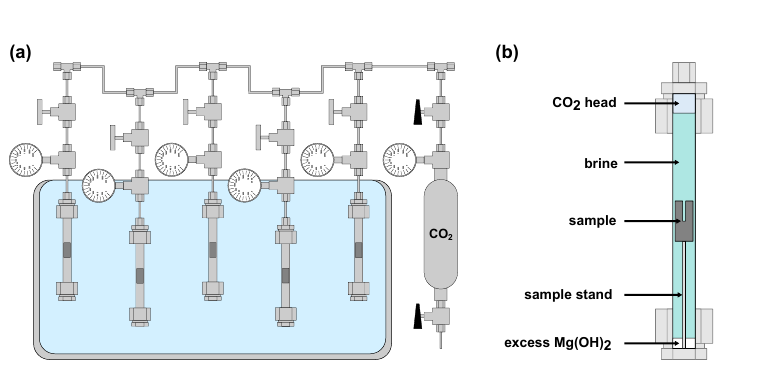

Rock samples and reaction conditions
The samples came from the Crawford Ultramafic Complex in Ontario, Canada, and were collected from 129.8 to 132.0 meters below the surface. The rock is serpentinized dunite: an ultramafic rock composed mainly of serpentine minerals, small remnants of olivine, brucite-rich veins, and trace magnetite. Each cylindrical mini-plug measured 9.5 millimeters across and 21 millimeters long. A narrow blind hole increased the reactive surface area and connected the fluid with internal veins and flaws.
Stainless-steel reactors held the samples at 90°C and 3.5 megapascals of CO2 pressure. The fluid contained deionized water and magnesium hydroxide, which maintained magnesium-rich conditions comparable to water that has already reacted with brucite farther from an injection well. The main time series lasted 2, 4, 11, 18, and 32 days. Two 11-day controls isolated key chemical effects: carbonated water at 90°C and magnesium-rich carbonated water at 20°C. The samples experienced fluid pressure with no externally applied confining load, creating low effective-stress conditions.